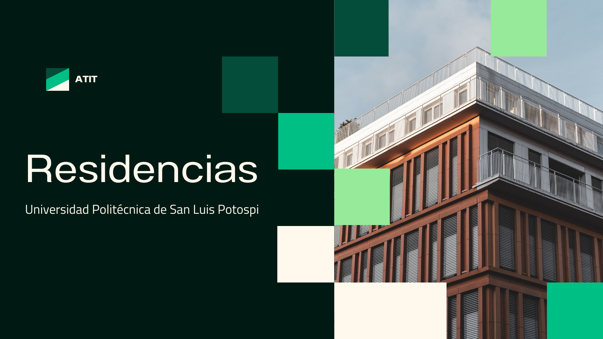
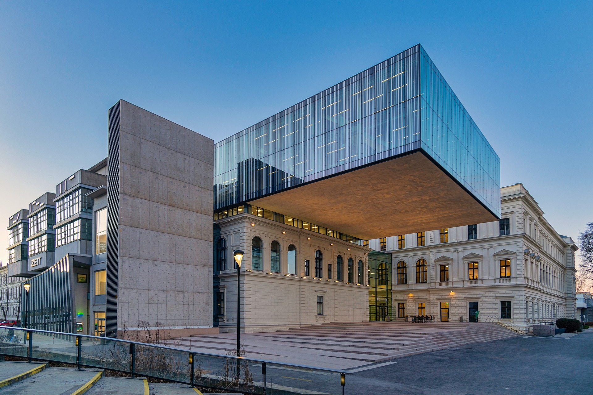

Definición de la materia
La Residencia Profesional es una materia y uno de los requisitos de egreso contemplados en el reglamento académico de la Universidad Politécnica de San Luis Potosí, el cual consiste en que el estudiante desarrolle un proyecto en cualquiera de los departamentos de una organización vinculados con el área de especialidad, donde se defina una problemática o necesidad y que propongan una solución viable a través de la participación directa del estudiante. La duración de la Residencia Profesional es de 480 horas y puede realizarse si se cuenta con al menos 85% de los créditos.
Documentos solicitados
- Documento de anteproyecto de residencia profesional.
- Constancia de aceptación de anteproyecto de residencia profesional
- Acuerdo de colaboración del programa de residencia proesional (contrato).
- Reportes mensuales de residencia profesional.
- Reporte final de residencia profesional
- Cara de liberación de proyecto de residencia profesional

Recomendaciones
- Pedir a su Residente que le entregue el documento de Anteproyecto dos semanas antes de la fecha límite para alta de residencia profesional señalada en el calendario oficial de la Universidad.
- Hacer una revisión exhaustiva del Documento de Anteproyecto y asegurarse que su Residente realice todas las modificaciones sugeridas por usted en un periodo no mayor a dos semanas.
- Revisar el Acuerdo de Colaboración del Programa de Residencia Profesional (contrato) antes de firmarlo.
- Reunirse con su residente cada dos semanas o cada 80 horas para evaluar el avance del proyecto.
- Pedir a su residente que elabore los reportes respectivos de 80 horas y los entregue a control escolar.
- Contacte al Asesor Externo de Residencia Profesional y compruebe que el avance del proyecto es consistente con lo mencionado por su Residente en las reuniones de asesoría.
- Pedir a su Residente que le entregue el Reporte Final de Residencia Profesional dos semanas antes de la fecha límite para acreditar la residencia profesional señalada en el calendario oficial de la Universidad (profesores de tiempo completo) o dos semanas antes de finalizar su contrato de trabajo con la Universidad (profesores por asignatura)
- Hacer una revisión exhaustiva del Reporte Final de Residencia Profesional y asegurarse que su Residente realice todas las modificaciones sugeridas por usted en un periodo no mayor a dos semanas.